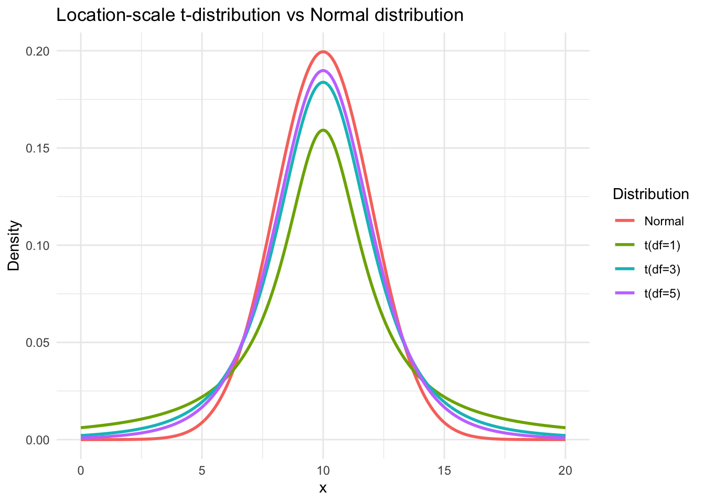
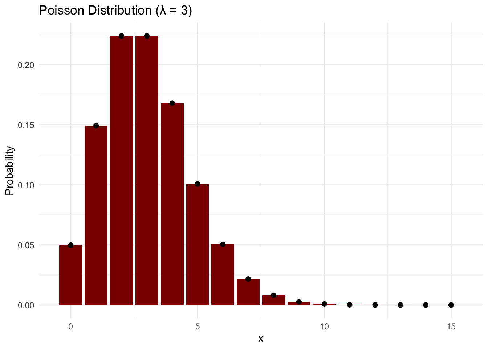

Appendix A — Common Distributions
A.1 Bernoulli Distribution
| Property | Description |
|---|---|
| Name | Bernoulli distribution |
| Notation | \(\text{Bernoulli}(\pi)\) |
| Parameters | \(0 \le \pi \le 1\): probability of success |
| Support | \(x \in \{0,1\}\) |
| PMF | \(f(x) = \pi^x (1-\pi)^{1-x}\) |
| CDF | \(F(x) = 0\) for \(x < 0\); \(1-\pi\) for \(0 \le x < 1\); \(1\) for \(x \ge 1\) |
| Mean | \(\pi\) |
| Variance | \(\pi(1-\pi)\) |
| R functions | dbern(x, prob) (PMF) pbern(q, prob) (CDF) qbern(p, prob) (quantile) rbern(n, prob) (random sampling) (from extraDistr package) |
| Special cases | \(\text{Binomial}(n=1, \pi)\) is \(\text{Bernoulli}(\pi)\). |
A.2 Beta Distribution
| Property | Description |
|---|---|
| Name | Beta distribution |
| Notation | \(\text{Beta}(\alpha, \beta)\) |
| Parameters | \(\alpha > 0\): shape; \(\beta > 0\): shape |
| Support | \(x \in (0, 1)\) |
| \(f(x) = \dfrac{x^{\alpha - 1} (1 - x)^{\beta - 1}}{B(\alpha, \beta)}\) | |
| CDF | \(F(x) = I_x(\alpha, \beta)\), the regularized incomplete beta function |
| Mean | \(\dfrac{\alpha}{\alpha + \beta}\) |
| Variance | \(\dfrac{\alpha \beta}{(\alpha + \beta)^2 (\alpha + \beta + 1)}\) |
| R functions | dbeta(x, alpha, beta) (density) pbeta(q, alpha, beta) (CDF) qbeta(p, alpha, beta) (quantile) rbeta(n, alpha, beta) (random sampling) (base R) |
| Special cases | \(\text{Beta}(1,1)\) is \(\text{Uniform}(0,1)\). |
A.3 Location-Scale t Distribution
| Property | Description |
|---|---|
| Name | Location-scale \(t\) distribution |
| Notation | \(t(\mu, \sigma, \nu)\) |
| Parameters | \(\mu \in \mathbb{R}\): location; \(\sigma > 0\): scale; \(\nu > 0\): degrees of freedom |
| Support | \(x \in \mathbb{R}\) |
| \(f(x) = \dfrac{\Gamma\left(\frac{\nu+1}{2}\right)}{\Gamma\left(\frac{\nu}{2}\right)\sqrt{\nu\pi}\sigma} \left[1 + \dfrac{1}{\nu} \left(\dfrac{x - \mu}{\sigma}\right)^2\right]^{-\frac{\nu+1}{2}}\) | |
| CDF | \(F(x) = T_\nu\left(\dfrac{x - \mu}{\sigma}\right)\), where \(T_\nu\) is the CDF of the standard \(t\) distribution |
| Mean | \(\mu\) for \(\nu > 1\); undefined for \(\nu \le 1\) |
| Variance | \(\dfrac{\nu \sigma^2}{\nu - 2}\) for \(\nu > 2\); infinite for \(1 < \nu \le 2\); undefined for \(\nu \le 1\) |
| R functions | dt.scaled(x, df, mean = mu, sd = sigma) (density) pt.scaled(q, df, mean = mu, sd = sigma) (CDF) qt.scaled(p, df, mean = mu, sd = sigma) (quantile) rt.scaled(n, df, mean = mu, sd = sigma) (random sampling) (from metRology package) |
| Special cases | - \(t(0,1,\nu)\): standard Student’s \(t\) - \(\nu \to \infty\): converges to \(\mathcal{N}(\mu, \sigma^2)\) - Heavy-tailed alternative to the normal distribution |
A.4 Negative Binomial Distribution
| Property | Description |
|---|---|
| Name | Negative binomial distribution |
| Notation | \(\text{NB}(\mu, r)\) |
| Parameters | \(\mu > 0\): mean \(r > 0\): size (dispersion) |
| Support | \(x \in \{0,1,2,\ldots\}\) |
| PMF | \(f(x) = \dfrac{\Gamma(x+r)}{\Gamma(r)\,x!} \left(\dfrac{r}{r+\mu}\right)^r \left(\dfrac{\mu}{r+\mu}\right)^x\) |
| CDF | \(F(x) = \displaystyle \sum_{k=0}^{\lfloor x \rfloor} \dfrac{\Gamma(k+r)}{\Gamma(r)\,k!} \left(\dfrac{r}{r+\mu}\right)^r \left(\dfrac{\mu}{r+\mu}\right)^k\) |
| Mean | \(\mu\) |
| Variance | \(\mu + \dfrac{\mu^2}{r}\) |
| R functions | dnbinom(x, size = r, mu = mu) (PMF) pnbinom(q, size = r, mu = mu) (CDF) qnbinom(p, size = r, mu = mu) (quantile) rnbinom(n, size = r, mu = mu) (random sampling) (base R) |
| Special cases | As \(r \to \infty\), \(\text{NB}(\mu, r) \to \text{Poisson}(\mu)\). |

A.5 Poisson Distribution
| Property | Description |
|---|---|
| Name | Poisson distribution |
| Notation | \(\text{Poisson}(\lambda)\) |
| Parameters | \(\lambda > 0\): rate (mean number of events per unit interval) |
| Support | \(x \in \{0,1,2,\ldots\}\) |
| PMF | \(f(x) = \dfrac{e^{-\lambda} \lambda^x}{x!}\) |
| CDF | \(F(x) = \displaystyle \sum_{k=0}^{\lfloor x \rfloor} \dfrac{e^{-\lambda}\lambda^k}{k!}\) |
| Mean | \(\lambda\) |
| Variance | \(\lambda\) |
| R functions | dpois(x, lambda) (PMF) ppois(q, lambda) (CDF) qpois(p, lambda) (quantile) rpois(n, lambda) (random sampling) (base R) |
| Special cases | - Limit of \(\text{Binomial}(n,p)\) as \(n \to \infty\), \(p \to 0\) with \(np=\lambda\) fixed - Distribution of counts in a homogeneous Poisson process - Sum of independent \(\text{Poisson}(\lambda_i)\) is \(\text{Poisson}(\sum \lambda_i)\) |
